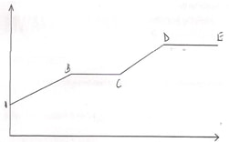
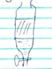
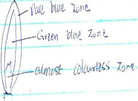
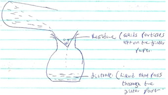
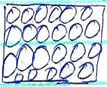
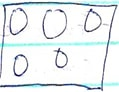
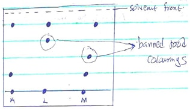
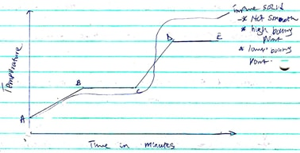

Answer All the questions in the spaces
c) One of the effects of drug abuse is hallucination. What does this term mean. ( 2mks)
d) Name three frequently abused drugs? ( 3mks)
| Liquid | L3 | L4 |
| L1 | Miscible | Miscible |
| L2 | Miscible | immiscible |
Use the information given to answer the questions that follow.
The results showed the presence or banned food colourings in L and M only.

A - 177 78.5 Very Soluble
B -23 77 Insoluble
C -219 -183 slightly soluble
D -78 -33 Soluble
| Substances | Melting Point oC | Boiling point oC | Solubility in water |
| A | -177 | 78.5 | Very Soluble |
| B | -23 | 77 | Insoluble |
| C | -219 | -183 | Slightly soluble |
| D | -78 | -33 | Soluble |
b) Drug abuse is the use of a drug for any purpose other than for which is intended.
c) Hallucination -----something that you think you can see or hear that is not really there, especially
because of an illness or the effect of drugs.
d) Any three
-Alcohol
- Tobacco
-Bhang
-Khat (miraa)
-Heroine
-Cocaine
2. Conductors substances which allow electrical energy to flow through them .Example metals.
Non-conductors substances which do not allow electrical energy to flow through them .example wood, papers, plastics.
3a)R- melting
V-evaporation
w-condensation
U-freezing
b) Any three
Iodine
Solid carbon (IV)oxide
Benzoic acid
Ammonium chloride
Alluminium (III)chloride
Anhydrous Iron (III)chloride
4a) Fractional distillation

b) Separating funnel
5. Does not react with many reagents.
- Easy to observe the reaction (clear observation)
-Easy to clean
6. Any three
.Spirit lamp
-Candle
-Gas stove
-kerosene stove
-Electric heater
7a)

7b)-Very hot
-Does not form soot.
c) Luminous flame is easily visible from a distance.
8. Any three
-volumetric flasks
-syringes
-Pipettes
-Burettes
-measuring cylinder
9.Elements are pure substances which cannot be split into simpler substances by any chemical means example sodium, potassium (award any correct element ) while a compound is a pure substance made up of two or more elements chemically combined.(example sodium chloride –award any correct compound)
10.

11a) Sublimation
b) Separating funnel
c) Fractional distillation
d) Evaporation
12. Place the mixture into a beaker and cover with a watch glass containing cold water. Heat the mixture gently and iodine solid will sublimate and settle on the cold watch glass .The remaining mixture add water to it. salt will dissolve but sand would not. Filter the mixture and sand is collected as the residue and salt as the filtrate .Evaporate water to collect salt as the solid.
13. a(i) spatula –scooping solid substances from containers
( ii) pipe clay-triangle---for supporting crucible during heating.
( iii) Wire gauze- used for even distribution of heat when heating substances in beakers or flasks
b) for holding substances being burnt.
14.-Ignorance
-Carelessness
15 a) Solvent extraction- is a technique used to separate the components of a mixture based on their solubility in different solvents
b) Hydrated salt—salt that contains water of crystallization
c) Saturated solution—solution which no more solute can dissolve into it.
16. Place where experiments which produce poisonous gases are carried out.
- storing reagent which produce poisonous gases.
17.

In gaseous state , the particles are far apart and free to more randomly in all directions hence no definite shape and volume.

In solid state ,the particles are closely packed together and can only vibrate within fixed positions hence shape and volume
18.

19. a)Chemical change
b) Physical change
c) Chemical change
20.

BC- The temperature remains constant until all the solid melts. Here, the heat supplied is used to weaken forces of attraction holding the particles of the solid together.
CD- Temperature rises steadily as the liquid of the pure substance absorbs heat energy .The heat supplied increases further ,the kinetic energy of the particles causing them to move fast.
21. Add water to the mixture ,stir and filter to obtain copper(II)oxide as a residue. Evaporate the f iltrate to dryness to recover the sodium chloride crystals.
22.a)
i)C
ii)A
b) C and D
c) B
d) A. This is because they have different boiling points with water hence they can be separated by fractional distillation.
23.a (i) Sodium Na
(ii)Calcium Ca
(iii) Potassium K
b) Zinc Sulphide Zinc and Copper
ii) Sodium oxide sodium and Oxygen